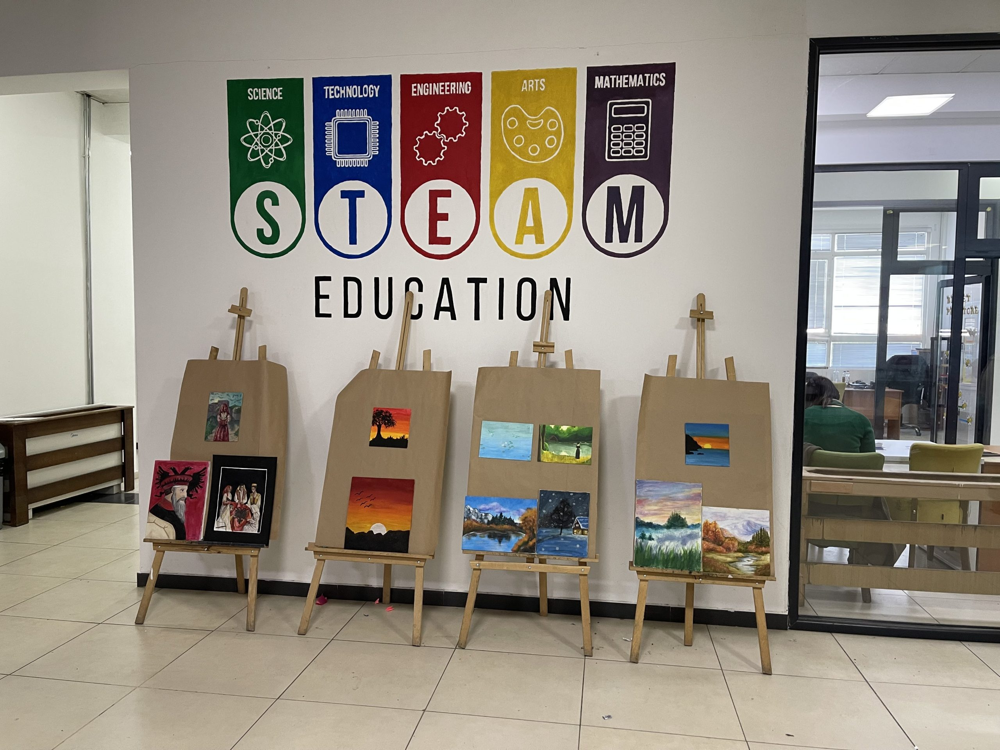

Hapet ekspozita e nxënësve të shkollave të UBT-së
Në hapësirat e shkollave të UBT-së, në kuadër të lëndës së Artit figurativ është hapur Ekspozita e nxënësve. Ekspozita do të jetë e hapur deri të premtën më datën 23 .2. 2024 për të gjithë të interesuarit, të cilët mund të vijnë t’i shikojnë punimet e nxënësve çdo ditë nga ora 8:00-16:00. Kjo ekspozitë pasqyron një nga format e shprehjes kreative të nxënësve, me tamatika dhe stile të ndryshme, të cilat janë punuar me përkushtim e dashuri nga nxënësit.